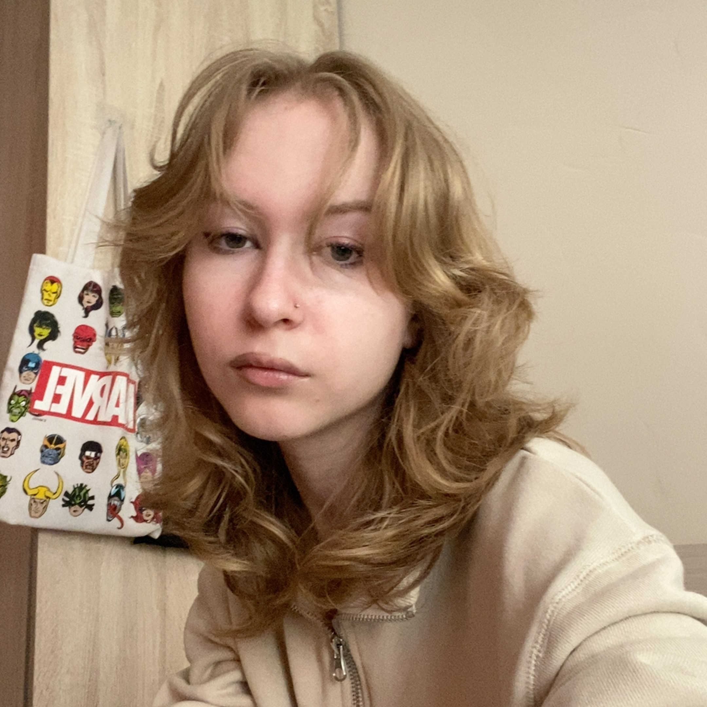
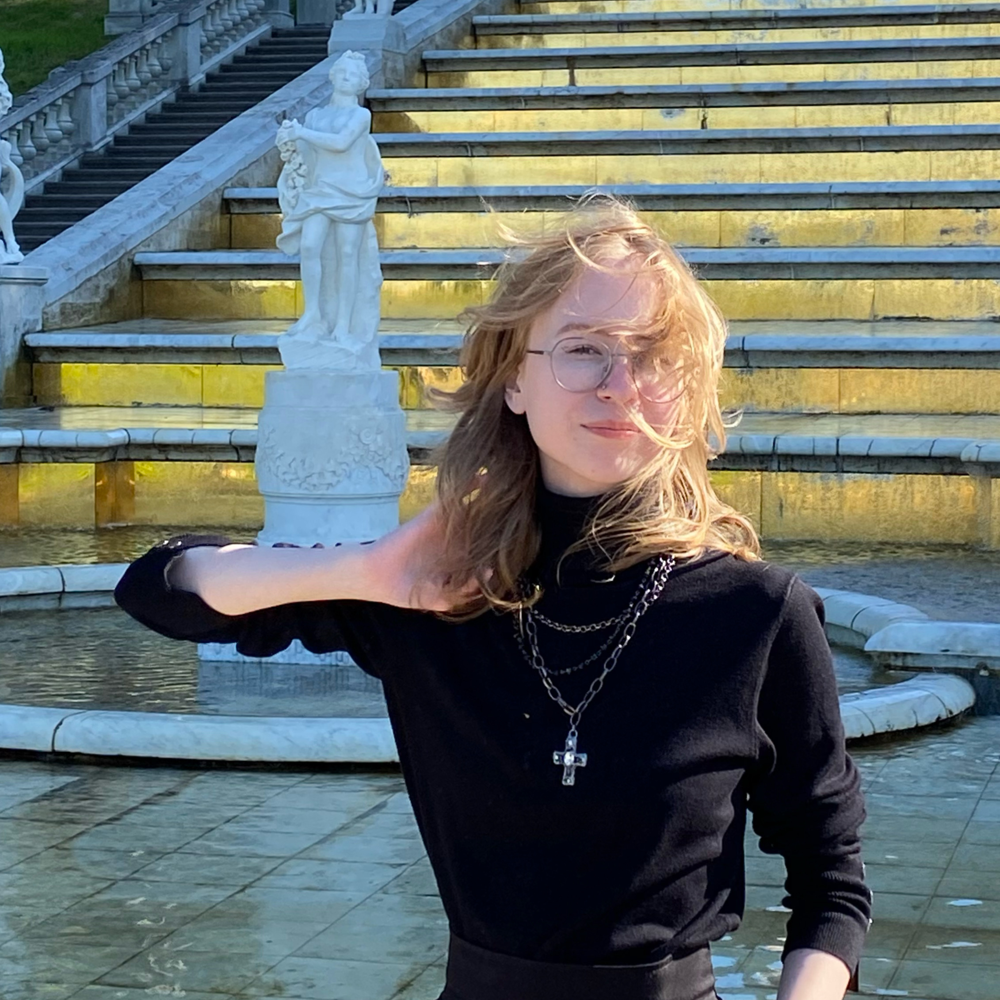

Portfolio

About me
My name is Natalia Agapova. I am a first-year IU bachelor student.
I am interested in Front-end, UI/UX design, machine learning, and computer vision. Currently I am working on multiple team projects and studying product management. My little trip to Front-end Web Development has only started so I don't know much about it, but yeat I am very curious to know everything so I am studying multiple courses online right now. This is my first site!

My projects
I have a little experience in programming. But I'm quite good at team work and I am always eager to study.
- Right now I am in a team working on a stamp recognition service. The purpose of the project is for documents to stay within their companies with no third parties. I am a SCRUM manager, I organize the work process.
- As a part of my product management course, my team and I are working on a potential app for making online doctor appointments. Instead of developing the app, we focus more on managing it since that is the purpose of the course.
Some other facts
- I have been studying English for 15 years now. I have passed the Unified State Exam (EGE) for 100 points and have been hired to Skyeng.
- I am good at mathematics. In 2018, I participated in the local mathematical competition for teams and my team took 2nd place around the town.
- I love travelling!